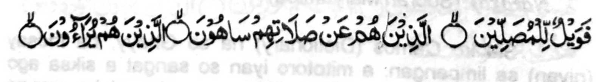

"Na sangat a siksa a rek o manga barasambayang. A siran na so Sambayang iran na pakalilipatan niran.
So siran na maki-ilai-lain siran. " [Soorah Al-Maun:4-6]
So kapakalipat na kati-i so manga initapesiron:
1. So tanto a madarainon taman sa da niyan maatod so titho a wakto o Sambayang.
2. So di niyan tatago-on sa ginawa so Sambayang
3. So kalipati ko kadakel o raka'at.